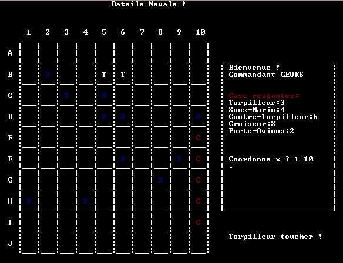
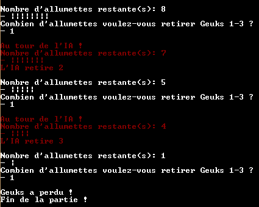
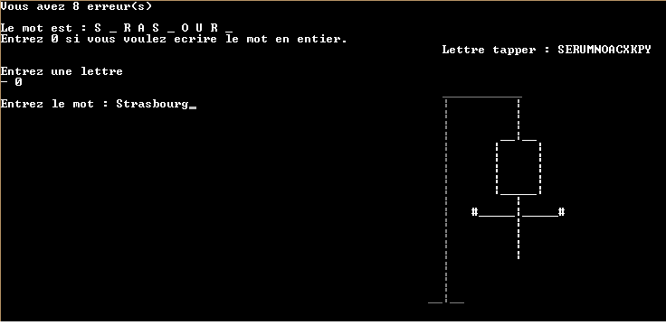

Bataille Navale

Telechargement
EXE PAS
La bataille navale, appelée aussi touché-coulé, est un jeu dans
lequel deux joueurs doivent placer des « navires » sur une grille tenue secrète
et tenter de « toucher » les navires adverses. Le gagnant est celui qui parvient à
torpiller complètement les navires de l'adversaire avant que tous les siens ne le soient.
Jeu de Nim

Telechargement
EXE PAS
Les jeux de Nim sont des jeux très courants, de stratégie pure, à deux joueurs.
Ces jeux, dont il existe d'innombrables variantes, se jouent avec des graines,
des billes, des jetons, des allumettes ou tout autres objets facilement manipulables.
Pendu

Telechargement
EXE PAS
Le pendu est un jeu consistant à trouver un mot en devinant quelles sont les lettres
qui le composent. Le jeu se joue traditionnellement à deux, avec un papier et un crayon,
selon un déroulement bien particulier. Quand le dessin est terminé on voit un
bonhomme allumette qui se pend